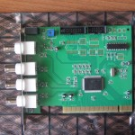
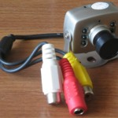
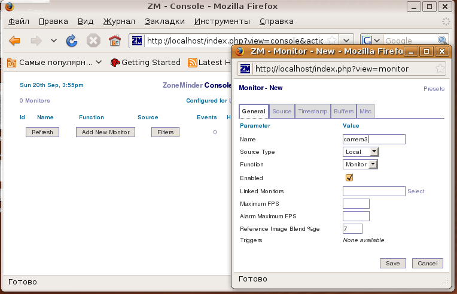
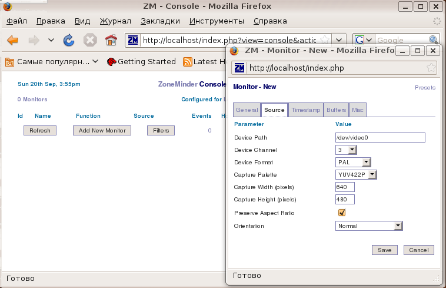
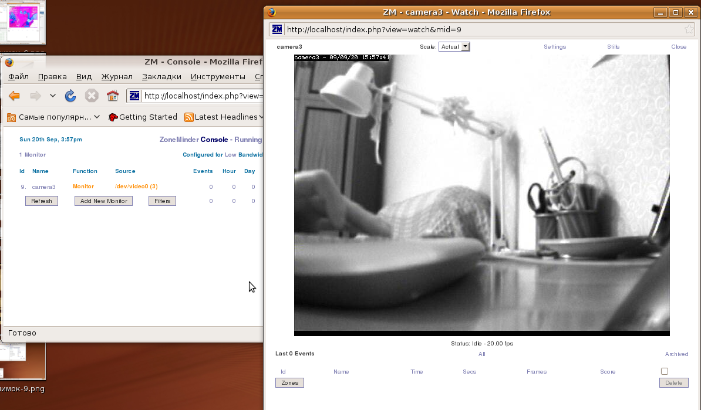
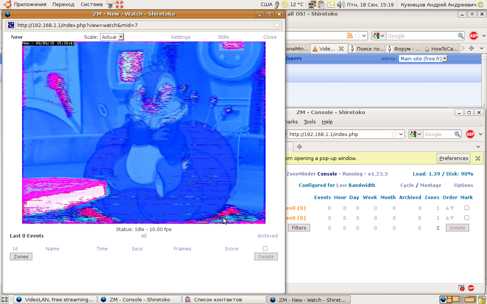

Организация видеонаблюдения Zoneminder в Ubuntu
Эта статья даёт основную информацию о том как настроить гибкий и многофункциональный видеорегистратор на основе компьютера. ZoneMinder — свободное программное обеспечение, для организации видеонаблюдения под лицензией GNU GPL.
Возможности системы:
Были куплены:
Внешний вид устройств:
 
В качестве сервера потокового вещания будем использовать Zoneminder.
Настройка платы видеозахвата
Выгружаем модуль bttv
$ sudo rmmod bttv
Загружаем модуль с «принудительным» указанием типа платы, который подбирается методом перебора =):
$ sudo modprobe -v bttv card=0x69 tuner=-1 autoload=0
Где, card - это тип используемой платы, в большинстве китайских плат 69
tuner - тип тюнера, т.к. у нас не tv-тюнер ставим -1
Проверяем всё ли правильно сделали:
$ v4l-info | head -n 10 | grep card card : "BT878 video (ProVideo PV143)"
Проверка
Несколько способов проверки vlc, tvtime(лучше всего), xawtv:
cvlc v4l2:///dev/video0 :v4l2-standard=255 -vvv --no-audio
cvlc v4l2:///dev/video0 --no-audio --sout '#transcode{vcodec=theo,vb=1000,deinterlace}:display'
tvtime
xawtv -nodga -noxv -geometry 640x480 -c /dev/video0
Если все работает сохраняем настройки, создаем файл /etc/modprobe.d/bttv.conf и добавляем в него строчку
options bttv card=69 tuner=-1
Zoneminder
Процесс установки представлен здесь. Рассмотрим некоторые нюансы установки:
kernel.shmmax = 167772160
$ chmod a+rwx /dev/video0
иначе вы увидите черный экран.



Возможные проблемы
Пример неправильного формата пикселя:
